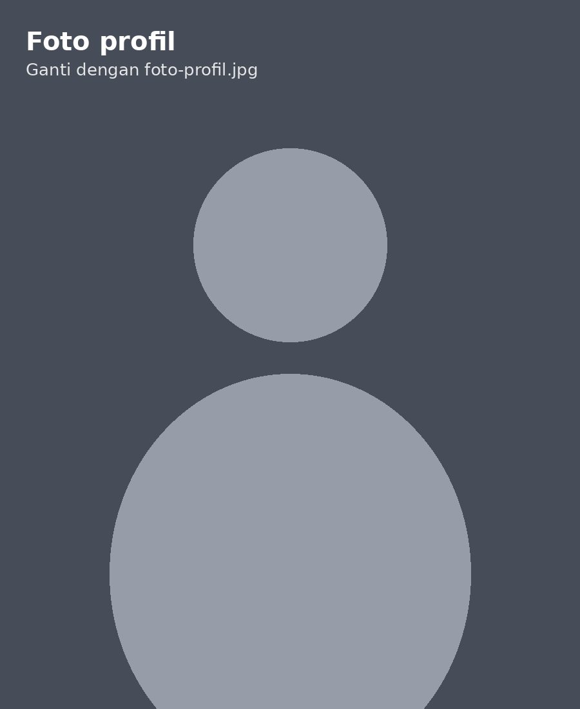

Copy kampanye Ramadan toko daring
Headline, caption, dan email. Klik email naik dari 2,1% ke 3,8%.

Content Writer
Content writer dan copywriter yang bikin orang berhenti scroll dan mau klik. Empat tahun menulis iklan, artikel SEO, dan naskah video untuk brand lokal.
Terbuka untuk posisi Copywriter atau Content Writer di agency, Jakarta atau remote
Headline, caption, dan email. Klik email naik dari 2,1% ke 3,8%.
Masuk halaman 1 Google untuk 6 kata kunci dalam 3 bulan.
30 caption Instagram untuk aplikasi tabungan. Rata-rata disimpan 1.200 kali.
Naskah visual dan audio untuk brand minuman dingin.
Sisa halaman sengaja kami sembunyikan. Mau lihat versi lengkapnya? Chat kami, demo penuh kami kirim lewat WhatsApp.